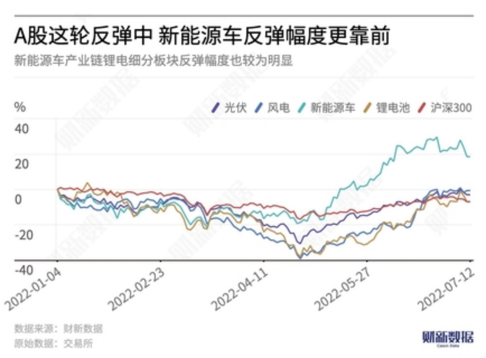

Since the rebound of A-shares on April 27th, the new energy sector has been leading the market. As of the end of June, wind power, photovoltaics, and lithium batteries have all rebounded by more than 40%. The rebound in the new energy vehicle consumption sector has been more pronounced, due to frequent policy support, particularly in the lithium battery sector and other related segments.
However, as the A-share market entered a period of consolidation and volatility in July, the new energy sector also began to experience a pullback. The market has divergent views on the sustainability of the sector. Some investors believe that the new energy sector has accumulated a lot of gains, with high valuations, and some stocks have even hit new highs. In this stage, the risks in the new energy sector may be greater than the opportunities.